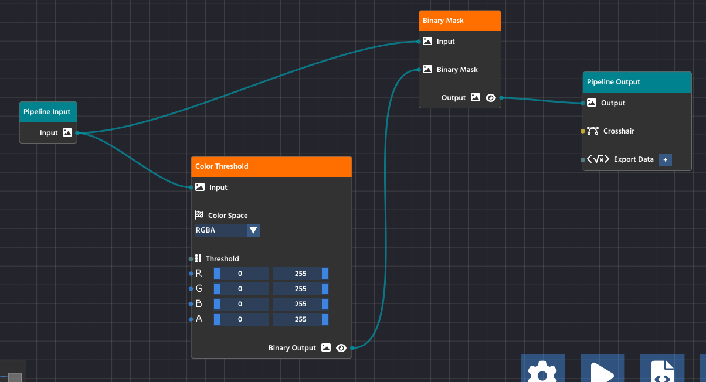
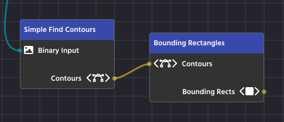
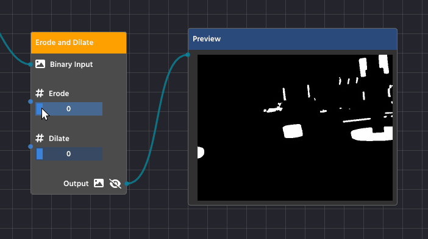
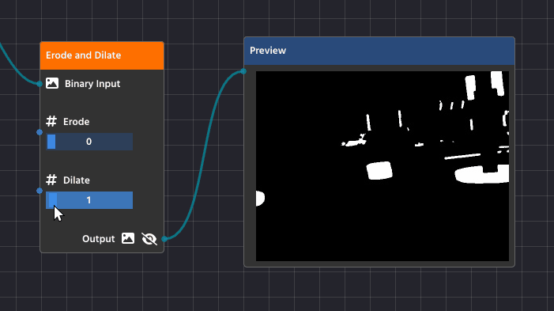

Hello There!
Note
This documentation is a work in progress, new pages will be developed and added as time goes on
Warning
Please note that the software is under active, early development, and it is not yet as stable and reliable, there are recovery safe guards in place to prevent loss of project data, but we still cannot ensure full stability. Make sure to report any issues in the GitHub repository or in the Discord server.
Thank you for you interest in PaperVision!
PaperVision is designed to make computer vision more accessible, whether you’re just starting out or optimizing complex pipelines for competition. Inspired by node-based workflows in Blender and Unreal Engine Blueprints, it offers an intuitive drag-and-drop interface for building vision pipelines.

We created this tool to support FTC teams in learning and developing their seasonal OpenCV algorithms in a visual and interactive way, while also streamlining the entire process of designing, testing, and deploying these algorithms—so teams can focus on what matters most: bringing their vision-powered robotics ideas to motion!
Downloading PaperVision
Bundled with EOCV-Sim (recommended)
PaperVision is bundled inside EOCV-Sim, making an all-in-one vision development suite.
To download EOCV-Sim, follow the steps in the documentation.
Note
Locate to the PaperVision tab on the top right of EOCV-Sim to start making your own projects.
 (1) (1).png)
Running from Gradle (development and testing)
Use the following commands to run the project with Gradle, this will allow you to test the latest features and changes, building from source.
git clone https://github.com/deltacv/PaperVision.git
cd PaperVision
./gradlew runEv
PaperVision relies on EOCV-Sim to run pipelines with live previews. This means that if you run PaperVision on its own, you won’t be able to see the pipeline’s output in real time. However, you can still use the editor to design your pipelines and export the generated source code for use elsewhere.
The Editor Basics
When creating a new project for the first time, it is recommended to go through the “Guided Tour” to learn the basics of using the PaperVision editor. Click on the “Guided Tour” button when the welcome dialog comes up;
 (1) (1).png)
In this guide, we’ll go into detail through some key points that are mentioned on the Guided Tour.
Input and Output Nodes
The starting two nodes when creating a new project serve as the entry point for your pipeline. The “Pipeline Input” feeds your algorithm with the images from the real-world, ready to be broken down into the steps needed to perform the detection you need.
While developing, you can choose various “Input Sources” to feed your pipeline with, for ease of use. You can use any USB webcam plugged into your computer, while images, videos, and HTTP stream sources are available as well!
The “Pipeline Output”, as the name implies, helps you to visualize the result of your processing. Any image passed onto the output parameter will be promptly displayed when previewing the pipeline.
 (1) (1).png)
Adding More Nodes
.png)
.png)
Click the plus (+) button or press the SPACE key to open the node library. Drag any node into your workspace to add new functionality to your pipeline. Use the gear icon for settings, the play button to run your pipeline, and the code icon to export your pipeline’s source code.
Making Your First Link

To create a link, click and drag from the small circle (the output pin) on the right side of one node, like the Pipeline Input node, and release the mouse button over the small circle (the input pin) on the left side of another node, such as the Color Threshold node.
Note
Pins are color-coded and feature small icons to represent the type of data they carry.
To successfully link two nodes, you simply match the pin colors and icons!
- The visual style of a pin tells you immediately what output it provides or what input it expects.
- For example, the yellow Image pin has a distinctive image icon, while numeric pins represent their data with their own separate visual indicators.
Once you connect matching pins together, the data will seamlessly flow from the output directly into the next processing node.
Running & Visualizing Your Pipeline
Main Pipeline Output
The most important node for visualization is the Pipeline Output node (found in the FLOW category).
- Connect the Final Image: Ensure the final processed image stream is connected to the Output pin of the Pipeline Output node.
- Run the Pipeline: Press the Play button in the bottom toolbar.
The image connected to the Pipeline Output node will automatically be displayed as a live stream in the dedicated preview window (typically located on the top left of the workspace).

Visualizing Intermediate Steps
During development, you often need to check the image at an intermediate stage (e.g., to confirm your Color Threshold settings are correct before contour detection).
- Any output pin that can be visualized (like image pins) has a small Pre-visualization (Previz) button next to it, it is typically represented with a clickable “Eye” button.
- Click this button on the output pin of any node in the pipeline.

Input Sources Menu
The Input Sources menu is what you use to select the data feed for your entire pipeline. It appears specifically when you click the Play button in the toolbar to start processing.
.png)
This menu is crucial because it allows you to choose exactly what feeds the initial Pipeline Input node:
- Image Files: Static images (like PNGs or JPGs) are ideal for testing and debugging as they provide a consistent, unmoving image.
- Live Camera Feeds: Any connected webcam (e.g., “Logi C270 HD WebCam”) is available for live operation, processing a continuous video stream.
Note
You can add new sources by clicking the “Create new input source” button at the bottom of the menu.
Ensuring the Node Flow is Complete and Valid

For your pipeline to run successfully, data must flow seamlessly from the input all the way through to the output, and all processing steps must be properly configured. A valid and complete pipeline will always follow this pattern:
- Pipeline Input: All processes must start from the Pipeline Input node, which serves as the entry point for the image or video stream.
- Processing Chain: Intermediate processing nodes (like Color Threshold and Binary Mask) take data from a previous node’s output and pass their processed result to the next node’s input.
- Pipeline Output: The final node in your chain must connect its processed data to the Pipeline Output node. This teal-colored node is the exit point for the processed image, making it available for viewing in the preview window (the
Outputpin) or for exporting (theExport Datapin).
Caution
Crucially, ensure that all nodes in the chain have their required parameters connected.
In the case of the Color Threshold node, this means the image data is connected to its Input pin, but it also means that the threshold values (R, G, B, A sliders) are set either manually or are connected to another node’s output to control the processing logic. A node with an unconfigured or unlinked required parameter will stop the pipeline from functioning correctly.
If your pipeline runs but produces no results, double-check that every node is connected and that the final processed image is successfully routed to the Output pin on the Pipeline Output node.
Node Types
The power of PaperVision lies in its organized and color-coded system for building computer vision pipelines. To help you quickly find the specific block of functionality you need, every node is assigned to a distinct category, visually identifiable by its title bar color. Understanding these categories will make building, debugging, and expanding your visual program much faster and more intuitive.
| Category Name | Node Color | Purpose | Examples |
|---|---|---|---|
| Pipeline Flow | Cyan | Defines the structural beginning and end of your visual program. | Handling the camera input and outputting the final result. |
| Image Processing | Orange | The fundamental tools for modifying, enhancing, and preparing an image. | Applying a Threshold, Blur filter, or converting color spaces. |
| Feature Detection | Indigo | Analyzing the image to find objects, shapes, or points of interest. | Finding the biggest Contour, detecting Blobs, or identifying Bounding Rectangles. |
| Classification & Filtering | Yellow | Organizing and refining detected objects based on specific criteria. | Filtering contours by area or aspect ratio, or exporting targets. |
| Drawing & Overlay | Teal | Drawing elements (like shapes or lines) back onto the image for visualization and feedback. | Drawing Contours or Rectangles onto the final output. |
Understanding Node Pins and Data Flow
While nodes perform the work, the pins on their edges manage the flow of information. Understanding pin types is essential for building a valid pipeline:
- Inputs (Left Side): These pins accept data from other nodes. A node may have multiple inputs for different types of data (e.g., one for the image, one for a number).
- Outputs (Right Side): These pins release the result of the node’s function.
- Data Typing: Every pin is strongly typed and color-coded.
Note
The editor strictly enforces compatibility behind the scenes. An Image output pin, for instance, cannot be wired into a numeric expected input pin, even by accident.
If you attempt to draw a wire between two pins that carry incompatible data types, the connection will simply not be created. This automatic validation guarantees that your data flow is fundamentally sound, helping you prevent execution errors in your visual program.
Thresholding
Thresholding is one of the most fundamental and essential techniques in computer vision. In simple terms, it’s the process of converting a color image into a purely binary image—meaning every pixel is either black or white.
What is a Threshold?
The “threshold” is a specific brightness value (a number) that acts as the cutoff point.
- Pixels Brighter than the threshold value are turned white (255).
- Pixels Darker than the threshold value are turned black (0).
 (1).png)
This action dramatically simplifies an image, eliminating gray areas and leaving only the strongest contrasts.
Why Do We Use It?
The primary purpose of thresholding is to isolate objects of interest from the background. By turning the image into a clear binary mask, we make it much easier for the computer vision algorithms to perform the next steps, such as:
- Detection: Identifying the precise shape and location of an object.
- Counting: Determining how many distinct objects are present.
- Measurement: Calculating the area or dimensions of the detected object.
For example, if you are looking for a bright white tennis ball against a dark green court, setting the threshold correctly will instantly make the entire background black and the entire ball white, simplifying the rest of your pipeline.
Thresholding in PaperVision
In PaperVision, you use the Color Threshold node (found in the Image Processing category) to apply this technique. This node gives you powerful control:
- Color Space: You can choose to apply the threshold to different color models like RGB or HSV. The HSV color space is often preferred for thresholding because it separates the color information (Hue and Saturation) from the brightness (Value), allowing you to filter by specific colors or light levels more effectively.
- Channels: Unlike a simple grayscale threshold, the node allows you to set independent low and high threshold limits for each color channel (e.g., the Red channel, the Hue channel, etc.). This lets you target a very specific range of colors and brightness simultaneously.
Note
To gain a grasp of the different color space types, including advantages and disadvantages, we recommend to go through LearnOpenCV’s guide on the topic
By fine-tuning these ranges, you create a precise binary mask that highlights only the parts of the image you want the rest of your pipeline to analyze.
Masking
Masking is a computer vision technique that uses one image to define which parts of a second image should be visible or processed. Think of a mask as a stencil: only the areas that are “cut out” by the mask are allowed to pass through.
In computer vision, a mask is a binary image (pixels are either black or white).
- White Pixels (255): These represent the area you want to keep or process (the stencil’s “cutout”).
- Black Pixels (0): These represent the area you want to ignore or hide (the stencil’s solid part).
How Masking Works
Masking is typically performed using the Bitwise AND operation, where the two input images—the Source Image and the Mask Image—are compared pixel by pixel:
$$ Result Pixel=Source Pixel∧Mask Pixel $$
- If the Mask Pixel is White (255): The source pixel is preserved, and its original color/value is copied to the final result.
- If the Mask Pixel is Black (0): The source pixel is blocked, and the final result pixel is set to black (0).
The result is the original source image, but with everything outside the white area of the mask turned black.

Masking in PaperVision
In PaperVision, you will use the Binary Mask Node (found in the Image Processing category) to apply this operation.
The Binary Mask you use is typically the result of a Thresholding operation. For example:
- You use a Threshold Node to turn a complex scene into a simple Binary Mask where your target object is white, and everything else is black.
- You pass the original, full-color image and the new Binary Mask into the Mask Node.
- The Mask Node outputs the original image, but only the object of interest remains in color; the rest of the image is blacked out.
Countours and Filtering
After you have used Thresholding and Masking to isolate your object of interest, the next logical step is to mathematically define its shape using Contours. This process allows the computer to understand the object’s boundaries, which is essential for accurate measurement and location.
What is a Contour?
A Contour is simply a curve joining all the continuous points along the boundary of a shape that have the same color or intensity.
Once an object’s boundary is defined as a contour, you can use that list of coordinates to perform various operations, like calculating area, finding the center, or drawing a bounding box.
1. Image Preparation (Creating the Binary Mask)
Contour detection works best, and often exclusively, on a binary image (a black-and-white image where pixels are either 0 or 255). This step ensures the algorithm only sees two things: the object and the background.
You first use a process like “Thresholding” to convert your original image (which may be color, or grayscale) into a binary mask. This isolates the area of interest (which should be white) from the background (which should be black).
 (1).png)
2. Contour Detection
Once the image is a clean binary mask, the contour-finding algorithm can be applied.
The algorithm systematically scans the image, looking for a transition from a black pixel (background) to a white pixel (object). When it finds this transition, it begins to “trace” the continuous line of white pixels around the shape until it returns to the starting point.
The output of this process is not an image; it is a mathematical list of (x, y) coordinates for every point along the boundary of the detected shape.
 (1).png)
3. Post-Detection (Filtering and Analysis)
After detection, the list of contours is passed to the rest of your pipeline. Since the detection process often finds many small, noisy, or irrelevant shapes, the next steps involve turning the raw contours into actionable data:
- Filtering: You apply Filtering to eliminate unwanted contours based on criteria like area (to remove noise), aspect ratio (to identify specific shapes), or the number of vertices.
- Analysis: The remaining, filtered contours are then used for analysis, such as calculating the object’s area, finding its centroid (center point), or drawing a simple Bounding Box or Bounding Rotated Rectangle around it.
 (1).png)
4. Final Result
 (1).png)
Note
We will learn how to draw shape outlines, such as this example, in the “Overlaying” chapter.
Bounding Rectangles
After your computer vision pipeline has found and filtered the Contours (the precise outlines) of your target objects, the final goal is to turn those complex outlines into simple, actionable data. Bounding Rectangles are the standardized boxes used to achieve this, making the object’s location, size, and orientation easy to read and use in your robot’s code.
Essentially, a bounding rectangle is the smallest, simplest box you can draw around a shape that still completely contains the original object. There are two main types you’ll use:
1. The Simple Box: Axis-Aligned Bounding Rectangles
This is the fastest and easiest type of bounding box to use, often simply called a Bounding Rect.
- What It Is: This is the smallest rectangle that surrounds your object, but its sides must always stay straight up and down—parallel to the edges of your image (the X and Y axes). It never rotates.
- The Data You Get: You get four simple numbers: the X and Y coordinates of the top-left corner of the rectangle, and the width and height of the box. This is enough to know exactly where the object is and how big it is.
- When to Use It: Use this type when your object is mostly straight or when you only need a quick box to define its general location.
In PaperVision, the “Bounding Rectangles” Node handles this task, taking a complex contour and outputting a simple, upright box.

2. The Snug-Fit Box: Bounding Rotated Rectangles
For objects that are tilted or rotated in the image, the simple Axis-Aligned box is often too big and inaccurate.
- What It Is: This is the smallest rectangle that surrounds your object, and it is allowed to rotate to fit the object perfectly. It provides the tightest possible fit around the target.
- The Data You Get: This box provides more detailed information: the center point of the object ($$xc,yc$$), the precise width and height of the rotated box, and, most importantly, the angle of rotation.
- When to Use It: Use this when the orientation (the angle) of the object is critical to your task (like aligning your robot to a specific side of a target) or when you need a highly precise measurement of the object’s true size.
In PaperVision, you’ll use the “Bounding Rotated Rectangles” node to generate this more detailed and precise data from a list of contours
.png)
3. Visual Examples
.png)
.png)
These visual examples clearly demonstrate the difference between the two methods of bounding. The image on the left shows Axis-Aligned Bounding Rectangles, where the boxes are perfectly upright but don’t perfectly hug the rotated yellow blocks. Notice how much extra space is contained within the boxes!
The image on the right shows Bounding Rotated Rectangles, where the boxes fit snugly around each yellow block. This snug fit is superior when you need to accurately determine an object’s precise size and its exact angle of rotation for robotic alignment or navigation.
Note
We will learn how to draw shape outlines, such as this example, in the “Overlaying” chapter.
Overlaying
Overlaying is the final step in a visual pipeline that takes the data you’ve found (like contours, rectangles, or key points) and draws it back onto the image. This process doesn’t change the underlying image or the data you found; it simply creates a visual representation of your detection logic so you can see exactly what the computer is seeing.
The Overlay nodes are found in the Drawing & Overlay category (Teal colored) and are critical for debugging and providing clear feedback during robot operation.
How Overlay Nodes Work
Overlay nodes have a very specific structure and flow:
- Input: The main
Inputpin receives the image you want to draw on. This is typically your original, full-color camera stream. - Parameters (What to Draw): You connect the specific data you want to visualize—such as the list of Rectangles found by a
BoundingRotatedRectsNodeor the Contours found by a contour finder. - Drawing Parameters (How to Draw): You connect a Line Parameters Node to define the appearance of the drawing. This node specifies the color and thickness of the lines that will be drawn on the image.
- Output: The node outputs the image with the overlay elements now drawn on top
| Node | Purpose | Data Required |
|---|---|---|
| Draw Rectangles | Draws axis-aligned bounding boxes around detected objects. | List of Rectangles |
| Draw Rotated Rectangles | Draws the snug-fitting, rotated boxes around detected objects. | List of Rotated Rectangles |
| Draw Contours | Draws the precise, raw boundary lines of the detected shapes. | List of Contours |
| Draw Key Points | Marks specific points found by feature detection algorithms. | List of Key Points |
.png)
Line Parameters Node
The Line Parameters Node is a utility node found in the Overlay category whose sole purpose is to define how an overlay element should look when drawn onto the image.
Drawing nodes like Draw Rectangles or Draw Contours don’t contain any styling information themselves. Instead, they require the output of a Line Parameters Node to fill their Parameters input pin.
Note
You can easily create a “Line Parameters” node by clicking the pencil button that is available on any of the nodes that have such a parameter, instead of having to add it manually!

This node gives you control over two key visual properties:
1. Line Color
This defines the color of the drawing using standard RGB (Red, Green, Blue) values.
- You can set the $$R$$, $$G$$, and $$B$$ values on a scale from $$0$$ to $$255$$.
- For example, setting $$R=255$$, $$G=255$$, and $$B=0$$ will produce a bright Yellow line.
2. Line Thickness
This defines how many pixels wide the drawn line will be.
- A thickness of $$1$$ results in a very thin line.
- Increasing the number (e.g., $$3$$ or $$5$$) will create a thicker, more visible outline.
Note
Another advantage of using “Line Parameters” is being able to share a single instance among different overlay nodes
.png)
Default Line Color (Unlinked Parameters)
The Drawing Nodes (like Draw Rectangles) are designed for quick visual feedback. When you look at the Parameters pin, you’ll see a pencil icon next to it, which you can click to automatically link a new Line Parameters node.
If you leave the Parameters pin unlinked to an external Line Parameters Node, the node uses its own default values. These are set to: $$Red=0$$, $$Blue=0$$, and $$Green=255$$.
Crosshair
The Crosshair Node (found in the Classification & Filtering category) is a powerful, multi-purpose tool that brings together visualization and target selection in one block.
It is designed to take the stream of filtered objects (Contours) from your detection pipeline and classify them based on their relationship to a central, adjustable $$+$$ crosshair drawn on the image.
The node’s dual function allows you to:
- Visually Align your robot or camera using the drawn crosshair as a focal point.
- Filter Targets to instantly select the object(s) nearest to, or surrounding, that crosshair.
This allows your code to easily identify and lock onto the intended target from a cluttered list of detected objects.
Inputs and Parameters
The Crosshair node requires the following inputs to function:
| Pin Name | Description |
|---|---|
| Overlay Input | The image stream (usually the original camera feed) onto which the crosshair will be drawn. |
| Contours | The list of detected objects (e.g., from a contour finder or filter) that you want to filter or select from. |
| Scale | An integer that controls the size (length) of the crosshair lines. This value is automatically scaled relative to the image size to ensure visibility. |
| Crosshair Offset | A vector ($$\Delta x, \Delta y$$) used to shift the crosshair away from the exact center of the image. This is useful for camera calibrations or if your target isn’t centrally located. |
| Crosshair Line | Defines the style of the crosshair. You can connect an external Line Parameters Node or use the internal editor to set the color and thickness. If unlinked, the color defaults to bright green. |
Selection Modes (Classification)
The core function of this node is to classify and filter your objects based on the crosshair’s position. This logic is controlled by the Detection Mode setting:
1. Mode: Inside
In Inside mode, the node acts as a containment filter.
- Logic: It checks every object to see if its Bounding Rectangle fully contains the crosshair’s center point.
- Result: The output list (
Crosshairpin) will contain all the objects whose bounding boxes overlap or enclose the crosshair.
2. Mode: Nearest
In Nearest mode, the node acts as a single-target selector.
- Logic: It calculates the distance between the crosshair’s center point and the center of every object.
- Result: The output list (
Crosshairpin) will contain only the single object that is closest to the crosshair.
Crosshair in Action
Additional Tips
Erode and Dilate
Erosion and Dilation are basic morphological operations performed on a binary image (the black and white image created by thresholding). They help refine the shape of the white objects by either shrinking or expanding their boundaries, which is crucial for cleaning up your final contours. You’ll find these functions combined in the Erode Dilate Node (in the Image Processing category).
Erosion (Shrinking)
Erosion is the process of making the white shapes shrink or wither away.
Detailed Purpose:
- Noise Removal: Erosion acts as a final filter against tiny, isolated white specks (noise) that survived the earlier blurring process. Since these specks are very small, the shrinking process completely eliminates them, cleaning up your mask.
- Separating Touching Objects: If two objects are so close they’re touching, the erosion process can carve out the small connection between them, successfully turning them into two separate shapes that your contour detector can analyze individually.

Dilation (Expanding)
Dilation is the opposite process—it makes the white shapes expand or grow.
Detailed Purpose:
- Filling Gaps and Holes: Dilation is essential for closing up small, black “holes” inside a white shape or connecting broken sections of what should be a single object. If a contour is broken due to poor lighting, dilation helps fuse those parts back together.
- Strengthening Faint Shapes: It can make thin or faint shapes more substantial, ensuring they are thick enough to be reliably detected as a solid contour.

Blurring
Blurring, while seemingly counter-intuitive for detection, is a vital step used to increase the reliability and robustness of your computer vision pipeline. It is almost always applied before your Color Threshold node.
Why Blur?
The primary purpose of blurring is noise reduction and smoothing edges.
- Reduce Noise: A real-world camera feed often contains high-frequency noise, which shows up as tiny, single-pixel errors or speckles in your image. To the computer, these speckles can look exactly like small objects, leading to hundreds of false Contours after thresholding. Blurring averages out the color of these tiny noisy pixels with their neighbors, effectively making them disappear.
- Smooth Edges: Blurring helps to smooth out harsh, jagged edges caused by camera limitations or compression artifacts. This makes the boundaries of your actual target objects cleaner and more continuous, resulting in better, more accurate Contours when you run the detection phase.

Using the Blur Node
You will use the Blur Node (found in the Image Processing category) to apply this filter.
- Placement: Connect the output of your Pipeline Input node directly to the Blur node’s Input.
- Algorithm: The most common and effective algorithm is Gaussian Blur, which uses a weighted average that prioritizes pixels closer to the center, creating a very natural blur effect.
- Value: This integer controls the strength of the blur.
- Start with a low value, typically 1 or 3.
- Increase the value slowly. A value that is too high will begin to merge your target object’s color with the background, making detection impossible.
A small amount of blur is usually enough to significantly clean up the image without destroying the features you want to detect.
.png)
Target Exporting
The Target Exporting step is the last piece of the computer vision pipeline. This is where you package the final, filtered data—the precise location and dimensions of your detected objects—and give it a name so your external program (your robot code) can easily access and use it.
Exporting is done using nodes from the Classification & Filtering category.
.png)
The Exporting Process
After you have used nodes like Bounding Rectangles and Crosshair to find and select your targets, you must use an export node to finalize the data.
- Input Targets: Connect the output list of targets (e.g., the
Rotated Rectanglesfrom a Bounding Node or theCrosshairoutput) to the export node’s Targets pin. - Assign a Label: Enter a descriptive Label (e.g.,
goal_targets,shipping_hub) directly into the node. This label is the name that your robot code will use to retrieve the data.
Note
You can use multiple export nodes to package different sets of data (e.g., one for Axis-Aligned Rectangles and another for Rotated Rectangles), giving each set a unique label.
How to Get the Data
Your robot code will interact with the pipeline object to retrieve the targets. The generated methods are designed to handle both single-target and multi-target scenarios:
1. Retrieving a Single Target
The generated code often exports targets with indexed names internally (e.g., "rects_0", "rects_1"). There’s a method that can retrieve a single target when it might be needed:
Rect singleTarget = pipeline.getRectTarget("front_box");
Rotated Rectangles are stored in a separate list:
RotatedRect nearestTarget = pipeline.getRotRectTarget("nearest_target");
2. Retrieving All Targets with the Same Label
If your pipeline detects multiple objects and exports them all under the label "rects", you’ll use the plural getter:
// Retrieves the full list of Rectangles exported under the label "boxes"
List<Rect> allBoxes = pipeline.getRectTargets("boxes");
// A loop is used to process each detected rectangle
for (Rect box : allBoxes) {
// Example use: calculate the center X of each box
int centerX = box.x + (box.width / 2);
telemetry.addData("Center X", centerX);
}
Rotated Rectangles are stored in a separate list:
// Retrieves the list of all Rotated Rectangles (useful for angled targets)
List<RotatedRect> allTiltedTargets = pipeline.getRotRectTargets("rings");
// A loop is used to process the angle of each target
for (RotatedRect ring : allTiltedTargets) {
// Example use: the angle is essential for alignment
double angle = ring.angle;
telemetry.addData("Target Angle", angle);
}
Usage in FTC
The primary goal of building a visual pipeline in PaperVision is to generate reliable Java code that can be integrated directly into your FTC robot’s OpMode. This process involves three main steps: Generation, Integration, and Data Access.
1. Code Generation and Integration
When you export your completed visual pipeline from the editor, it creates a standard Java class that extends OpenCvPipeline (often provided by the EasyOpenCV library).
- Generate the File: The editor creates a
.javafile (e.g.,MyPaperVisionPipeline.java) that contains all the complex computer vision logic you designed visually. - Add to Project: You must copy this generated file into the appropriate directory of your FTC robot’s Android Studio project (typically under
TeamCodeor a similar folder). - No Modification Needed: The beauty of this process is that you should not need to edit the generated file. All adjustments to thresholds, blurring, and filtering can be done in the visual editor and re-exported.

2. Instantiating the Pipeline in Your OpMode
Your robot’s code (in your LinearOpMode or TeleOp) needs to initialize and start the pipeline. This involves setting up the camera and instructing it to use your custom class.
Example OpMode Setup (Java)
You will use an instance of OpenCvCamera (from EasyOpenCV) and set your pipeline class as the processor:
Note
It is not the purpose of this chapter to be an in-depth guide of EasyOpenCV. There’s a documentation page that goes through this in the repository!
import org.openftc.easyopencv.OpenCvWebcam;
// Import your generated pipeline class
import org.firstinspires.ftc.teamcode.vision.MyDetectionPipeline;
// ... other imports
public class MyVisionOpMode extends LinearOpMode {
OpenCvWebcam webcam;
MyDetectionPipeline pipeline;
@Override
public void runOpMode() {
// 1. Instantiate your pipeline
pipeline = new MyPaperVisionPipeline();
// 2. Set up the camera (using FTC configuration names)
int cameraMonitorViewId = hardwareMap.appContext.getResources().getIdentifier("cameraMonitorViewId", "id", hardwareMap.appContext.getPackageName());
webcam = OpenCvCameraFactory.getInstance().createWebcam(hardwareMap.get(WebcamName.class, "Webcam 1"), cameraMonitorViewId);
// 3. Set your pipeline as the camera's processor
webcam.setPipeline(pipeline);
// 4. Start streaming
webcam.openCameraDeviceAsync(new OpenCvCamera.AsyncCameraOpenListener() {
@Override
public void onOpened() {
webcam.startStreaming(320, 240, OpenCvCameraRotation.UPRIGHT);
}
// ... error handling
});
// ... rest of OpMode setup
}
}
3. Data Access (Retrieving Targets)
Once the camera is streaming and the pipeline is running, the processFrame() method in your pipeline continually updates the lists of detected targets. You retrieve this data within your OpMode’s main loop before making a movement decision.
Note
Read “Target Exporting” in this documentation for the in-depth guide of this section!
You access the data using the public methods generated by the Export Targets nodes (e.g., getRotRectTarget, getRectTargets):
// Inside your OpMode's loop: while (opModeIsActive())
// Retrieve the single target closest to the crosshair
RotatedRect nearestTarget = pipeline.getRotRectTarget("nearest_object");
if (nearestTarget != null) {
// Read the angle and center point calculated by the pipeline
double targetAngle = nearestTarget.angle;
Point center = nearestTarget.center;
// Example decision logic:
if (targetAngle < -5) {
// Rotate robot left
} else if (targetAngle > 5) {
// Rotate robot right
}
}
General-Purpose Usage
While PaperVision is primarily designed for FTC robotics, the code it generates—a standard Java class extending OpenCvPipeline—can be used in any desktop, server, or Java Virtual Machine (JVM) application. The best way to run your pipelines in a general-purpose environment is by using the VisionLoop library.
Integrating VisionLoop with Gradle
1. Add the Repository
You first need to tell Gradle where to find the VisionLoop library, which is hosted on Maven Central. Add the mavenCentral() repository to your repositories block.
Gradle
repositories {
mavenCentral()
// Add any other repositories you use (e.g., Google, JitPack)
}
2. Add the Dependencies
Next, add the core VisionLoop library and any optional modules (like the streaming module for web output) to your dependencies block.
The core library is necessary, and you often need the streaming module if you plan to view the output remotely over a web browser.
dependencies {
// Core VisionLoop Library
implementation 'org.deltacv.visionloop:visionloop:x.y.z'
// Optional: Add the streaming module for MJPEG output (web browser)
implementation 'org.deltacv.visionloop:streaming:x.y.z'
// Add your other dependencies here (e.g., Kotlin, JUnit)
}
Note
The version number (
x.y.zin the examples above) is constantly updated. You must check the official VisionLoop GitHub repository (http://github.com/deltacv/visionloop) to find the current, stable version number to use for both dependencies.
Integrating Your Pipeline
The core steps to use your PaperVision-generated pipeline outside of FTC involve setting up a VisionLoop configuration:
1. Set the Input Source
First, you tell VisionLoop where to get its images. Unlike FTC, where the source is the robot’s camera, here you can specify a webcam index, a file path, or an image resource.
2. Add Your Pipeline as a Processor
Next, you insert your generated pipeline class into the VisionLoop chain using the .then() method. This instructs VisionLoop to pass every frame it receives through your custom logic.
3. Display the Output
Finally, you tell VisionLoop how to show the processed image. You can open a live display window on your computer or stream the results to a web browser.
Example: Running with a Webcam
This code snippet shows how to quickly create a VisionLoop, attach your generated MyPaperVisionPipeline class, and display the result in a window on your computer:
import io.github.deltacv.visionloop.VisionLoop;
public class DesktopVisionApp {
public static void main(String[] args) {
// Assume 'MyPaperVisionPipeline' is the class generated by PaperVision
MyPaperVisionPipeline pipeline = new MyPaperVisionPipeline();
// Build the vision loop using a fluent interface
var loop = VisionLoop.withWebcamIndex(0) // 1. Set the input source (Webcam 0)
.then(pipeline) // 2. Add your custom pipeline as a processor
.withLiveView() // 3. Open a live window on the computer
.build();
// Run the vision loop on the current thread
loop.runBlocking();
// Alternatively, use loop.toAsync().run() to run in the background
}
}